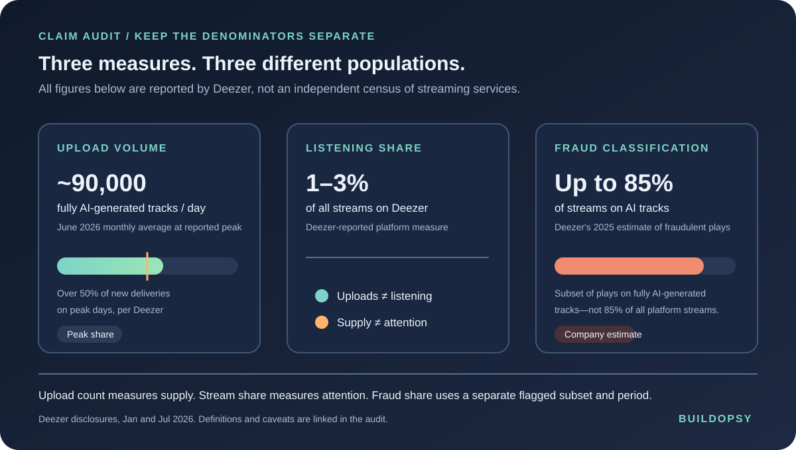

1. Half the Uploads Is Not Half the Music People Hear
Deezer's July 2026 newsroom update says its fully AI-generated deliveries averaged about 90,000 tracks per day during June, exceeding 50% of new uploads at peak. In the same disclosure, Deezer says fully AI-generated tracks accounted for 1–3% of streams on its service. That gap is the story. Upload capacity has become cheap; listener attention has not multiplied at the same rate.
These percentages describe different stages of the system. Upload share measures what distributors deliver. Stream share measures what listeners play. The 85% fraud estimate is a subset of plays on detected AI-generated music that Deezer says it classified as fraudulent in 2025. It is not 85% of all Deezer streams, 85% of all AI songs, or a finding about every platform.
AI-generated music is also not a synonym for bad music. A musician can use generation as a creative tool and make something listeners value. The relevant slop signal here is not the presence of a model. It is the combination of mass delivery, weak listener demand and attempts to manufacture royalty-bearing plays.
2. The Fraud Economics: Cheap Catalog, Artificial Plays
A streaming catalog has an ingestion path, a discovery path and a payment path. Generative tools lower the labor needed to produce another track. A distributor can deliver it to a service. Recommendations and search decide whether listeners find it. A royalty system then allocates money based on measured listening, subject to the platform's fraud controls.
The apparent incentive is to create more tracks than organic listeners will find, then use artificial activity to push a chosen track into the payout calculation. The cost of generating the file may be tiny compared with the potential reward from many fake plays. That is why Deezer's reported fraud share matters more than its raw track count. It is also why “the AI made the music” alone does not prove a stream was fraudulent.
Deezer says it began detecting fully generated music in January 2025. It says detected tracks are labeled, removed from algorithmic and editorial recommendations, and fraudulent plays are excluded from royalty payments. The company also announced removal of tracks used for streaming fraud and tracks that had gone unplayed for six months. Those controls target distribution and payout incentives rather than banning AI-assisted or synthetic music in general.
3. Detection Is a Classifier, Not a Truth Machine
Deezer says its detector looks for audio artifacts associated with generative systems and can generalize across models when examples are available. It reports 99.8% accuracy and fewer than one false positive per 10,000 human-made tracks. Those are vendor-reported metrics. The public materials do not include a complete benchmark set, independent replication, confidence intervals or a breakdown by genre, mastering chain and model version.
That caveat is not a reason to ignore the work. It is a reason to avoid turning a detector label into a verdict about authorship or intent. A good moderation system uses the classifier as one signal, keeps provenance and distributor records, looks for suspicious play patterns, and gives artists a review path. A false positive can cost a human creator reach and royalties; a false negative leaves a fraud channel open.
4. Spotify's Numbers Show Why Definitions Matter
Spotify's September 2025 announcement said it had removed more than 75 million “spammy tracks” over the previous year. It named mass uploads, duplicates, search-engine optimization tricks, artificially short tracks and other spam tactics. Spotify did not say that 75 million AI-generated tracks were removed. Counting every spam takedown as AI music would turn an explicitly broader moderation number into a false statistic.
Spotify also described a different control set: a spam filter to stop abusive tracks from recommendations, stricter handling of unauthorized voice impersonation, and AI disclosures through music credits. Its April 2026 update says labels can show specific AI contributions such as vocals, lyrics or production when an artist or distributor submits that information. Spotify is clear that an absent AI credit does not mean a track did not use AI.
The comparison shows two separate engineering problems. Deezer is trying to identify fully synthetic audio. Spotify emphasizes both distribution abuse and contributor-supplied provenance across a spectrum of AI use. Neither number is a census of the global music supply, and neither approach alone catches every kind of fraud.
5. What a Fair Streaming Control Plane Should Measure
Platforms should publish metrics by stage, with definitions and denominators visible:
- Ingestion: fully synthetic tracks received per day, total delivered tracks, duplicate clusters, and the portion with usable provenance metadata.
- Discovery: impressions and recommendation exposure for detected AI tracks, not just the number uploaded or removed.
- Listening: verified human engagement versus plays flagged for manipulation, reported separately by catalog type and time window.
- Payment: royalties held, rejected or returned after an appeal, with the false-positive review outcome published.
- Appeals: time to decision, reversals, and the fraction of creators who can contest a track-level detection without losing access to their full catalog.
Those measurements distinguish a useful new creator from a bot farm. They also make the detector accountable. If a platform only reports uploads, the loudest number wins. If it shows upload volume beside actual listening, enforcement and appeal outcomes, artists and listeners can see whether the controls work.
6. The Verdict
Deezer's disclosure makes an alarming headline more precise. Synthetic tracks can dominate the stream of new deliveries without dominating the listening feed. The platform says recommendations and fraud controls help explain that gap. The hard question is whether those controls remain accurate as generation tools and distributors change faster than review systems.
Spotify's “75 million spammy tracks” count covers more than AI-generated music. Deezer's “up to 85%” figure estimates fraudulent plays on AI music during a past measurement period; it is not a rate for all AI tracks or platforms. The engineering challenge is to preserve open creative participation while making fake scale expensive and fake listening unrewarding.
The upload counter measures supply. The play counter measures attention. A fraud detector has to know the difference.
Sources and Method
Deezer's upload, stream-share, fraud and detector figures are company disclosures. Spotify's spam count and product controls are company disclosures. “AI-generated,” “spammy” and “fraudulent” retain the source's own definitions. Rook's pipeline and control recommendations are analysis, not claims about either platform's private implementation.